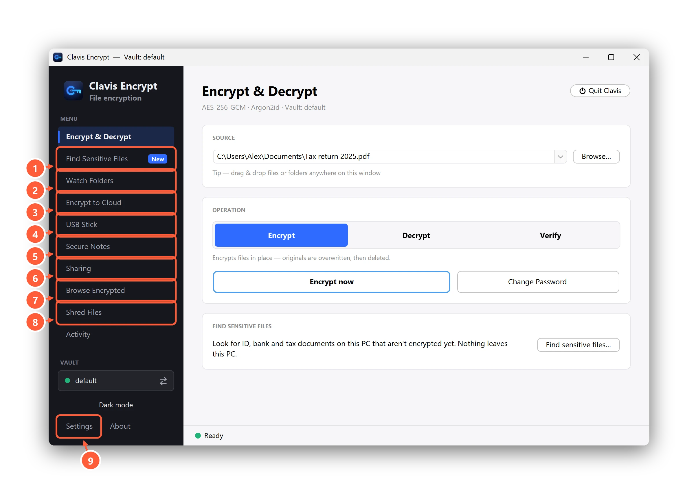
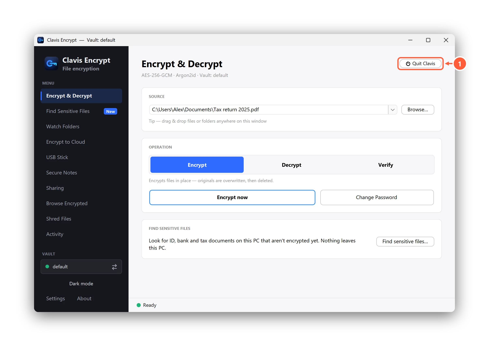

A tour of the Clavis window
Clavis opens on Encrypt & Decrypt, where most of the work happens. The sidebar on the left takes you to everything else.

- Find ID, bank and tax documents to encrypt (Pro)
- Watch Folders — auto-encrypt new files (Pro)
- Encrypt straight into your cloud folder (Premium)
- Carry your files and Clavis on a USB stick
- Encrypted notes (Pro)
- Your Clavis ID and contacts
- See encrypted files by their real names (Pro)
- Overwrite and delete files you no longer need
- Settings: licence, security, backup, language
- Encrypt & Decrypt — encrypt, decrypt or verify files.
- Find Sensitive Files — look for ID, bank and tax documents that aren't encrypted yet Pro.
- USB Stick — carry your encrypted files, and Clavis, on a USB stick.
- Shred Files — overwrite and delete files you no longer need.
- Activity — a history of everything Clavis has done.
- Vault (bottom left) — the vault you're using. Click it to switch vaults.
- Dark mode and About are at the very bottom.
Closing vs. quitting
The window's × hides Clavis to the system tray, so watch folders keep working. To stop Clavis completely, press Quit Clavis in the top-right corner.

- Quit closes Clavis completely
Clavis also locks the vault by itself after a period without activity, when the PC sleeps and when you lock Windows — see Settings.
Can't find what you need? All help articles · Email us